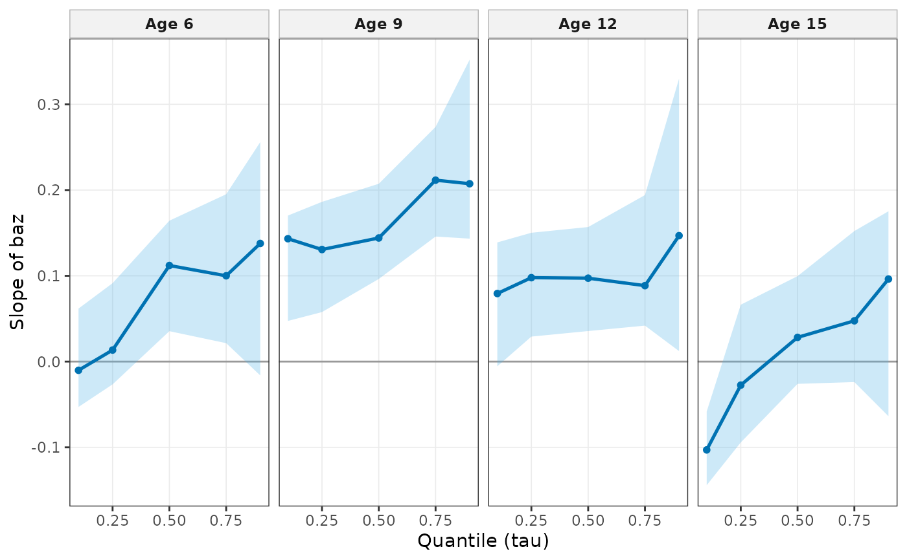
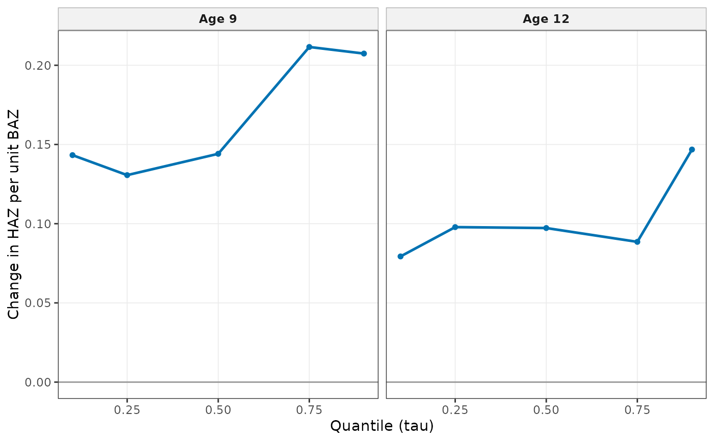

Shows how the association of the exposure with the outcome changes across the outcome distribution (quantiles on the x axis) at each anchor age. A flat line means the exposure shifts the whole distribution equally. A rising line means it matters more for children in the upper part of the distribution.
Usage
# S3 method for class 'wgh_rq'
plot(x, ages = NULL, ...)Arguments
- x
A
wgh_rqobject fromwgh_rq().- ages
Anchor ages to show (default all).
- ...
Display options (see
wgh_plot_options());show_ci = FALSEhides the bootstrap bands.
Examples
# \donttest{
d <- growdat[growdat$sex == "Female" & growdat$age >= 5, ]
f <- haz ~ splines::ns(age, knots = c(8, 11, 14), Boundary.knots = c(5, 18.5)) * baz
fit <- wgh_rq(d, f, taus = c(0.1, 0.25, 0.5, 0.75, 0.9), anchor_ages = c(6, 9, 12, 15), B = 30)
plot(fit)

plot(fit, ages = c(9, 12), show_ci = FALSE, y_label = "Change in HAZ per unit BAZ")

# }